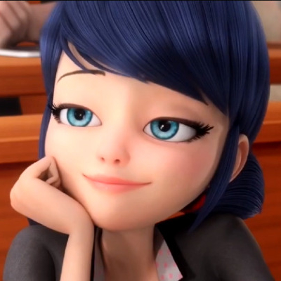
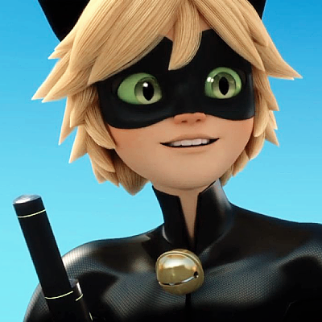
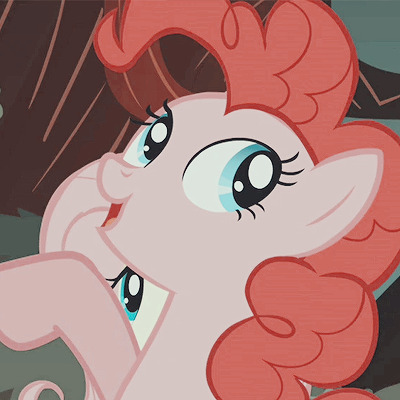
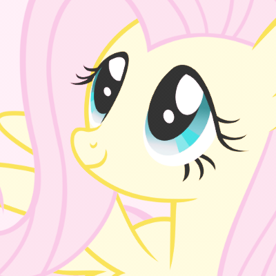

| Name |
Anime/Cartoon |
Age |
Backstory |
Comfort Character Reasoning |
Fun Fact |
Picture |
| Izuku Midoriya |
My Hero Academia |
16 |
In a world where most humans on the planet develop superpowers soon after they're born, a boy named Izuku Midoriya was one of the few who never developed any powers. As a child, Izuku dreamed to become a superhero like his idol, All Might, after he developed his power, or "Quirk". |
I relate to his character being he is kind and cares for others. He wants to help save people with a smile on his face. |
He loves to eat Katsudon |
 |
| Denki Kaminari |
My Hero Academia |
16 |
Denki is a Japanese student who, like many others his age, aspired to become a professional hero one day. His quirk, called Electrification, allowed him to generate electricity and manipulate it to a certain extent, although he still had a long way to go before mastering it. |
I relate to Denki because of his humor and ability to make people laugh without even trying. I also find his quirk to be exciting and powerful |
He has a funky taste in room decor. |
 |
| Star Butterfly |
Star vs The Forces of Evil |
15 |
She is a teenage princess of the kingdom of Mewni (located in another dimension) sent to Earth by her parents in order to learn how to use the royal magic wand. |
I relate to star because of her happy go-lucky personality and find her to be a character I see myself in. I enjoyed how she never backed down from a fight and showed mosnters who's boss |
She has a crush on her best friend named Marco Diaz. |
 |
| Tom Lucitor |
Star vs The Forces of Evil |
14 |
He is the demon prince of the Underworld and Star Butterfly's ex-boyfriend. |
Me and Tom are similar in our own ways but I mainly see myself in him due to his anger issues and love for cute things. |
He has a pet bunny that helps calm him. |
 |
| Marinette Dupain-Cheng |
Miraculous Ladybug |
15 |
She is a teenage girl who was chosen by Master Fu to wield the Ladybug Miraculous and become the superhero Ladybug. At first, she was reluctant to do the job, even going as far as to try to give her friend, Alya, the miraculous, but she gradually grew into the role. |
I see myself in Marinette because of her kind and caring nature as well as wanting to be there for her friends and protect them from harms way. |
She wishes to be a fashion designer. |
 |
| Chat Noir |
Miraculous Ladybug |
16 |
He is one of parisian's superheros who fights alongside Ladybug. |
I find Chat Noir to be a hilarious character and relate to him due to the fact that he has this sort of fun and wild side to him that I see in myself. |
He is Adrien Agreste when not transformed and has a crush on Ladybug. |
 |
| Pinkie Pie |
My Little Pony: Friendship is Magic |
27 |
Pinkie was born on a rock farm to two Earth ponies named Igneous and Cloudy. She's the youngest of four sisters. In her foalhood, she loved her parents and sisters very much despite their stoic, quiet personalities and enjoyed cooking with her sister Maude and ice skating. |
Pinkie pie is a bubbly character and loves to make everypony smile, just like me! |
She is a part of the mane 6 and is a baker at Sugar Cube Corner. |
 |
| Flutteshy |
My Little Pony: Friendship is Magic |
20 |
As a filly, she was even shier than she currently is and was a very clumsy, weak flyer. As such, she was teased by the same bullies who teased Rainbow Dash for her clumsiness (although, despite also being clumsy as a filly, Rainbow Dash was never a weak flyer) with the rhyme "Fluttershy, Fluttershy, Fluttershy can hardly fly. One day, Rainbow Dash challenged them to a race to defend Fluttershy, who was knocked off a cloud and saved by a bunch of butterflies. She was very impressed with the animals and sang a song about it, then when Rainbow Dash broke the sound barrier and caused the "sonic rainboom", the animals were scared away. Fluttershy reassured them and, in the process, discovered she could speak to animals, which was how she got her cutie mark. |
She is a kind and shy character and has a love for nature and all sorts of animals. I also consider myself shy at first but then bubbly once you get to know me and I love nature as well as animals |
She is also a part of the mane 6 and has the ability to speak to animals. |
 |